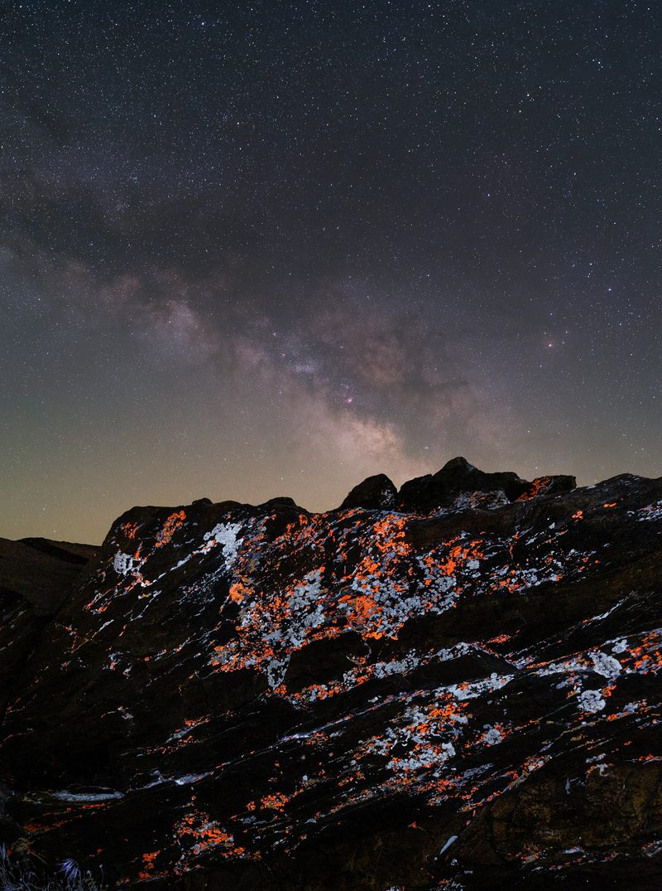
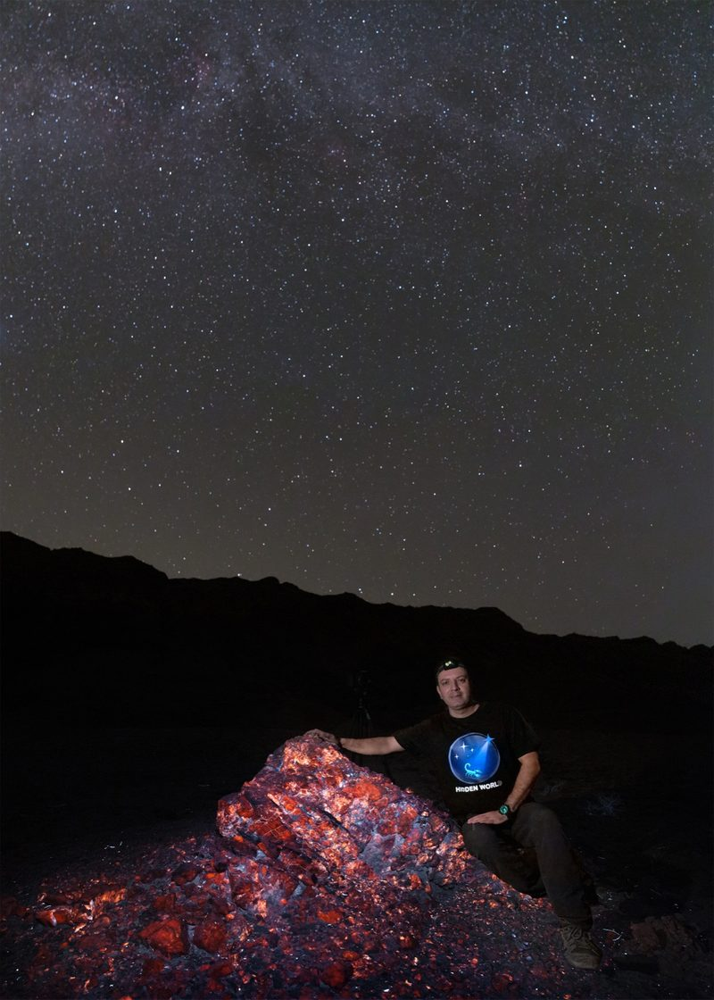
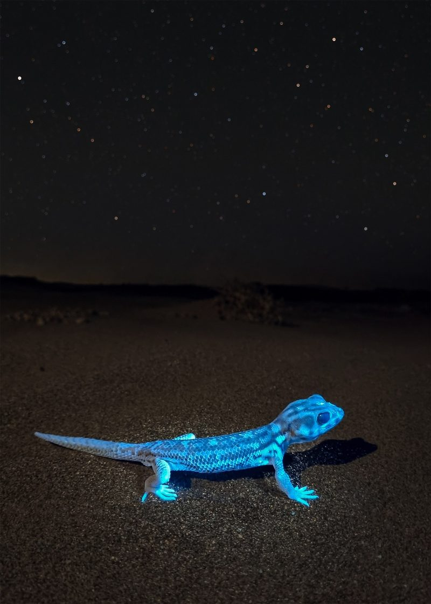
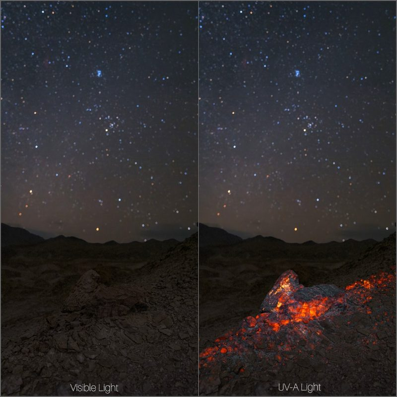

Ali Matinfar
Founder · Iran
Created Hidden World and leads its field documentation across Iran, deserts, nocturnal creatures, lichens, and fluorescent minerals.
Iran: underway Field documentation has begun.

A Collaborative Night Photography Project
Exploring nature through wavelengths beyond human vision
The Project
A collaborative project to find, photograph, and responsibly document hidden aspects of nature at night, natural subjects that reveal unique characteristics under UV-A light.
The goal is to document this unseen world through photography while keeping each subject in its natural environment.
It grew out of our background in astrophotography, capturing faint nebulae and hidden structures of the Milky Way that the human eye cannot see.
This led us to look beyond the night sky and explore the hidden details of the natural world beneath it.
“What hidden beauties exist in the nature around us at night that we simply cannot see?”

The Subjects
Exploring fluorescence across a wide range of animal life.
Exploring fluorescence in plants and their diverse structures.
Documenting fluorescence in lichens, fungi, and their natural compounds.
Exploring natural fluorescence in minerals, rocks, and geological materials.
In the wild, not the studio. Every subject is photographed in its natural habitat.

How we work and the science behind fluorescence
Our main tools are UV-A light sources.
We search for suitable subjects, observe their response under UV-A illumination, photograph them, and document the details.
We document each observation
A material absorbs ultraviolet light and almost immediately re-emits part of that energy as visible light, often appearing in a different color.
Under ordinary light, a scorpion may appear unremarkable. Under UV-A, parts of its body can fluoresce in vivid blue-green.

The Vision
A fluorescent scorpion photographed in the desert beneath the Milky Way becomes one story, bringing together the natural subject, its environment, the darkness of night, and the night sky in a single frame.
Protecting the darkness isn’t only about seeing the stars; it is also about preserving the beauty, biodiversity, and hidden wonders of the night time world.
From the Field
The Founders
Founder · Iran
Created Hidden World and leads its field documentation across Iran, deserts, nocturnal creatures, lichens, and fluorescent minerals.
Iran: underway Field documentation has begun.
Co-Founder · Canada
Joined to develop the project further and continues the search for new species, landscapes, and subjects across Canada’s ecosystems.
Canada: next New species, landscapes and ecosystems.
Ali started Hidden World in Iran; Amir joined to carry it forward, bridging two countries under one night sky. Long-term: a collection connecting the hidden world of Iran and Canada with the beauty of the night sky.
“We don’t only photograph the night sky, we capture the hidden world beneath it.”